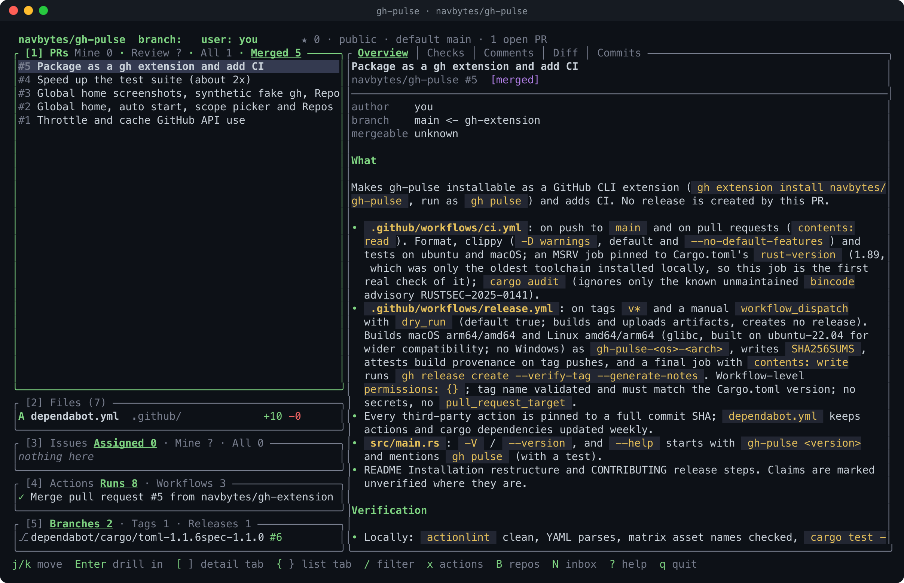
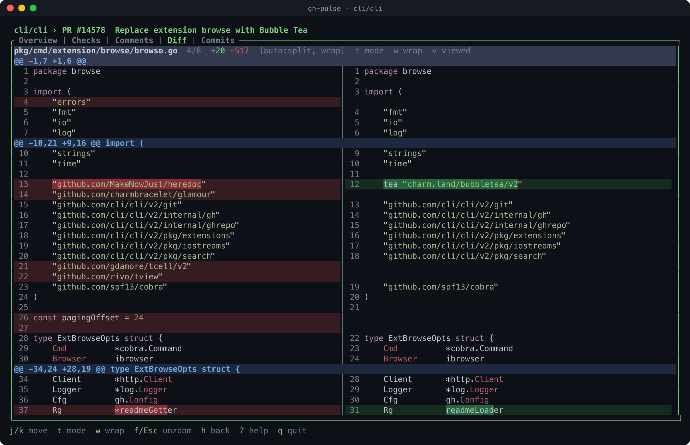
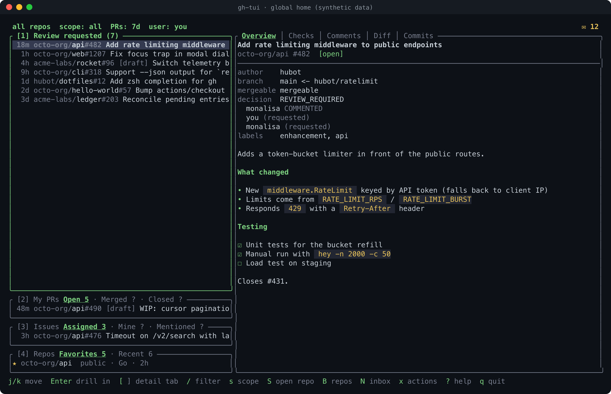

Review code in context
Read split or unified diffs, check CI, follow review threads and mark files viewed. Drill from a PR into files, commits, checks and comments.
Explore review featuresThe keyboard-driven GitHub cockpit for people who live in the terminal. Review pull requests, follow checks, triage issues and move between repos without breaking your rhythm.
gh extension install navbytes/gh-pulse
A real gh-pulse session against a public repository. Login shown as “you”.
01 / ALL THE SIGNAL, LESS NOISE
From a quick review to a deep dive, the next useful detail is a keystroke away.
Read split or unified diffs, check CI, follow review threads and mark files viewed. Drill from a PR into files, commits, checks and comments.
Explore review featuresStart anywhere. A global home brings together review requests, your PRs, issues and repositories. Narrow your scope or browse everything you can access.
Review, comment, label, merge, rerun workflows and more. Actions show the exact gh command before you confirm.
See workflow runs and failed steps, browse branches and releases, and open an inbox of unread notifications across repos.
02 / BUILT FOR THE WAY YOU WORK
Keep the whole picture in view, then zoom into the detail that matters. Keyboard navigation, clickable panels and mouse scrolling all work together.

03 / YOUR WORK, NOT ONE REPO
Open gh-pulse outside a repository to see a cross-repo home. Review requests, PRs and issues stay close, while the scope picker and repo browser help you move quickly.

gh; no real account is shown.04 / READY WHEN YOU ARE
gh-pulse uses your authenticated GitHub CLI session. Install the extension, then run it from a repo or anywhere for the global home.
gh auth login. Prebuilt binaries for macOS and Linux; Windows is unsupported.$ gh extension install navbytes/gh-pulse
$ gh pulse
# Or run anywhere for your global home